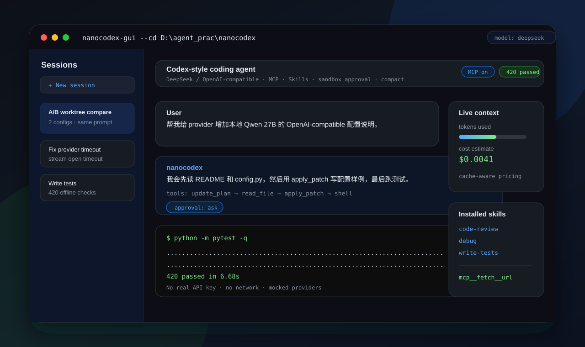

一个面向 DeepSeek 的 Codex-style 本地 coding agent。它不是官方 Codex 的复制品，而是把编码 Agent 最关键的工程机制重建成可读、可测、可替换模型后端的 harness：工具调用、文件修改、命令执行、沙箱审批、会话恢复、MCP、Skills、上下文压缩和成本统计。

nanocodex 是一个 DeepSeek-oriented 的本地 coding agent harness，用来验证“一个模型怎样在受控环境里持续读代码、改文件、跑命令、看结果、再修正”。
它对齐的是 Codex 类工具的工程能力，而不是外观：交互式编码循环、工具协议、仓库读写、命令执行、审批/沙箱、会话恢复、AGENTS.md、Skills、MCP、上下文压缩、成本统计和 worktree 隔离实验。
后端只要求 OpenAI 兼容 /v1/chat/completions，所以可以接 DeepSeek 托管 API，也可以把 base_url 指到本地 vLLM、llama-server、LM Studio 或企业内网模型服务。
模型不能直接碰文件系统。它必须输出结构化 tool call，由工具层执行，再把结果喂回模型形成闭环。
不宣称复刻 Codex 云端、PR review 或官方系统沙箱；它聚焦本地 coding agent 的核心可运行链路。
它展示的是 agent 工程化：协议、权限、上下文、成本、状态恢复、DeepSeek 兼容性和离线可回归测试。
官方 Codex 的关键体验是：读仓库、解释计划、调用工具改代码、跑命令验证、在权限边界内持续迭代，并能通过 AGENTS.md、Skills、MCP、会话历史等机制长期工作。nanocodex 把这些能力拆成了本地可运行模块。
| Codex 类能力 | nanocodex 做到了什么 | 实现程度 |
|---|---|---|
| 交互式编码循环 | AgentLoop.run_turn() 执行“模型 → 工具 → 结果 → 再模型”的多轮循环，CLI 和 GUI 都只是渲染层。 | 已实现 |
| 读仓库 / 改文件 / 跑命令 | read_file、apply_patch、shell 统一经 ToolRegistry 派发，模型只提交结构化工具调用。 | 已实现 |
| 计划与过程可见 | update_plan 记录多步骤任务状态；GUI/CLI hook 展示流式输出、reasoning、tool call 和结果。 | 已实现 |
| 沙箱与审批 | read-only / workspace-write / danger-full-access 三档沙箱，加 untrusted / on-failure / on-request / never 四档审批。 | 已实现，Windows 为策略级边界 |
| 会话恢复与历史 | 全量对话写入 JSONL；按 session_id 保存快照，支持 --resume、GUI 会话列表和 fork。 | 已实现 |
| AGENTS.md 项目指令 | agents_md.py 分层读取项目指令并注入 system prompt，让仓库约定持续生效。 | 已实现 |
| Skills 渐进加载 | 用户 skill + 内置 code-review / debug / write-tests；默认只注入名称和描述，需要时再读正文。 | 已实现 |
| MCP 扩展工具 | 从 ~/.nanocodex/mcp.toml 连接服务，工具暴露为 mcp__server__tool；附带本地/远程 catalog。 | 已实现 |
| 上下文压缩 | 默认 deterministic 零成本摘要，也支持 opt-in 模型 summarizer；保留 system 与最近用户上下文。 | 已实现 |
| 记忆 | remember 工具写入 ~/.nanocodex/memory.md，用于跨会话保存稳定偏好和项目事实。 | 已实现 |
| Git worktree 实验 | ab_compare.py 用两个隔离 worktree 跑同一 prompt，比较 diff、成本和延迟，再采纳一侧。 | 实验性实现 |
| GUI / 调度 / 图片输入 | Tkinter GUI、一次性/周期任务、图片 block 支持、prompt 增强和成本显示。 | 已实现或局部实现 |
AgentLoop.run_turn() 驱动单个用户回合直到完成。一个回合内可能发生多轮模型调用；每轮可产生工具调用，工具结果再进入下一轮上下文，token 用量逐轮累计。
# agent/loop.py — 回合产物 class TurnResult: final_text: str iterations: int # 本回合循环了几轮 stop_reason: str tools_used: list[str] usage: dict[str, int] # 真实 token 累计 → 折算成本
DeepSeek/OpenAI 兼容接口能跑起来只是第一步。真正做 coding agent 时，reasoner、tool call 历史、流式超时、usage 字段和成本统计都会踩坑。nanocodex 把这些处理放在 provider/deepseek.py、auto_reasoning.py 和 pricing.py 里。
| 优化点 | 为什么需要 | 实现位置 |
|---|---|---|
reasoning_content 回放 | DeepSeek V4/reasoner 在 assistant 历史里有 tool_calls 但缺 reasoning 时可能拒绝后续请求；nanocodex 会为旧会话补 (reasoning omitted) 占位。 | _sanitize_reasoning_replay() |
| reasoning 字段兼容 | 不同兼容网关可能返回 reasoning_content 或 reasoning；统一抽取后 CLI/GUI 可把思考流和正文流分开显示。 | _extract_reasoning() |
| DeepSeek thinking 参数映射 | off 映射到 thinking: disabled，max/high 映射到 DeepSeek thinking-mode 的 extra_body，避免配置写了但请求没带。 | _apply_reasoning_effort() |
| 自适应推理档 | auto 不再只是 no-op；遇到“报错/调试/debug/エラー”走 max，搜索类任务走 low，普通开发默认 high。 | agent/auto_reasoning.py |
| 流式首包超时 | Windows / 代理网络下，流式请求可能在首个 chunk 前卡住。默认 45 秒未拿到 response headers 就明确报错，可用环境变量调到 5-300 秒。 | NANOCODEX_STREAM_OPEN_TIMEOUT_S |
| 流式 tool call 聚合 | tool call 在 stream 里按 index 分片到达；nanocodex 聚合 id、name、arguments 后再交给 ToolRegistry，避免半截 JSON 直接执行。 | chat_stream() |
| DeepSeek cache-aware usage | DeepSeek 的 prompt_cache_hit_tokens / prompt_cache_miss_tokens 可能在 SDK 的 model_extra 里；nanocodex 会读出来做命中/未命中分开计价。 | _extract_usage() + pricing.py |
| 托管 / 本地双模式 | 同一套工具协议可以接 DeepSeek 官方 API，也可以接本地 vLLM / llama-server / LM Studio / Qwen endpoint，用于比较模型 coding agent 能力。 | base_url + model 配置 |
# 安装（含开发依赖） python -m pip install -e ".[dev]" # DeepSeek 托管 API 配置示例：~/.nanocodex/config.toml api_key = "sk-..." base_url = "https://api.deepseek.com/v1" model = "deepseek-chat" reasoning_effort = "auto" # CLI nanocodex --cd . nanocodex "add a --json flag to the CLI" # GUI nanocodex-gui --cd . # 全套离线测试（无需真实 key / 网络） python -m pytest -q
~/.nanocodex/config.toml）。Windows 沙箱是策略级而非内核隔离；MCP 工具在沙箱外执行子进程，只启用你信任的服务。